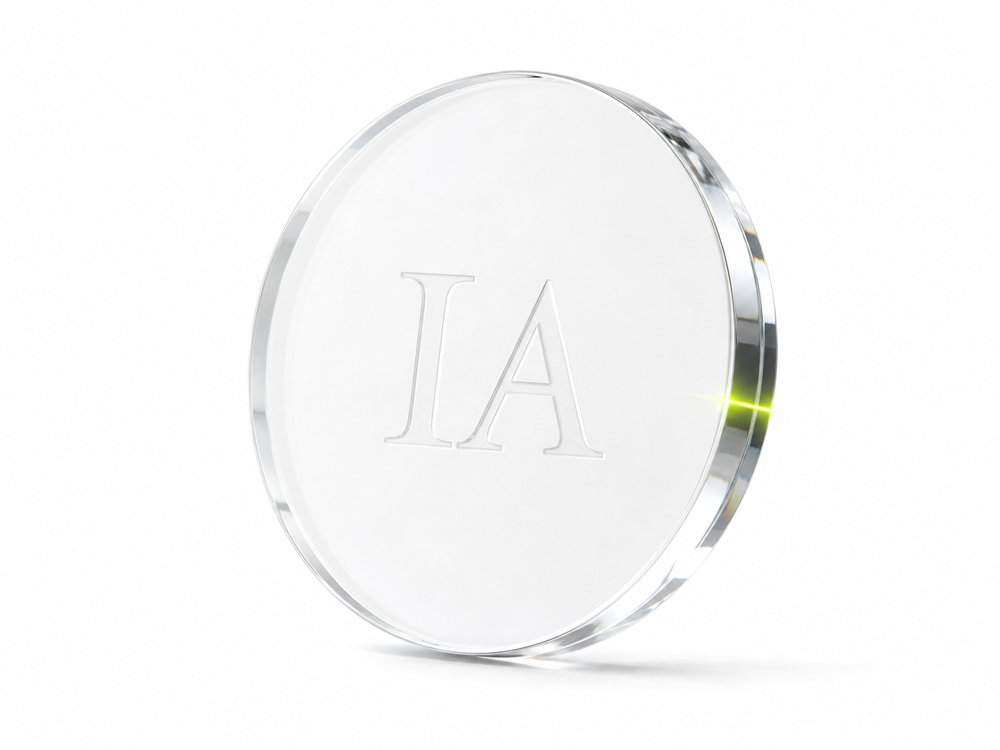

Intelligence
Amplification
Designing institutions for augmented intelligence.
Wise ethics and systems thinking for leaders designing AI-native institutions.

01 / Premise
The next era demands
better design.
Artificial intelligence is not merely a technical transition. It is an institutional and human one. The work is to extend capability without diminishing judgment, agency, or responsibility.
02 / The Work
Clarity for consequential decisions.
Recent keynote / CAISCEN
“The real question is not what AI can do. It is what we are becoming through its use.”Watch the keynote ↗

03 / The Living Book
A book designed to remain unfinished.
Not a fixed manifesto, but an evolving public text for thinking clearly about intelligence, tools, institutions, and the futures they make possible.
Enter the Living Book04 / Contact
Begin with a serious question.
For keynotes, workshops, and advisory conversations.
Start a Conversation